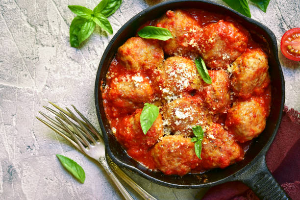
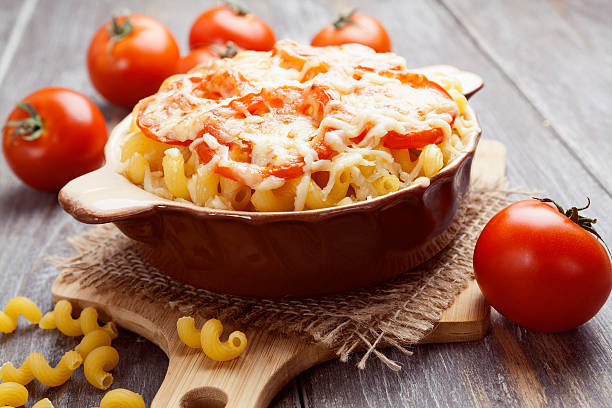
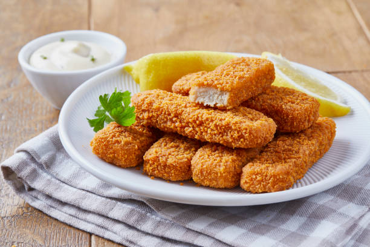
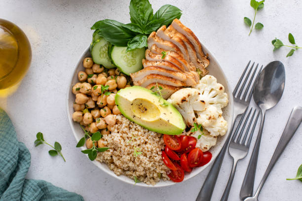
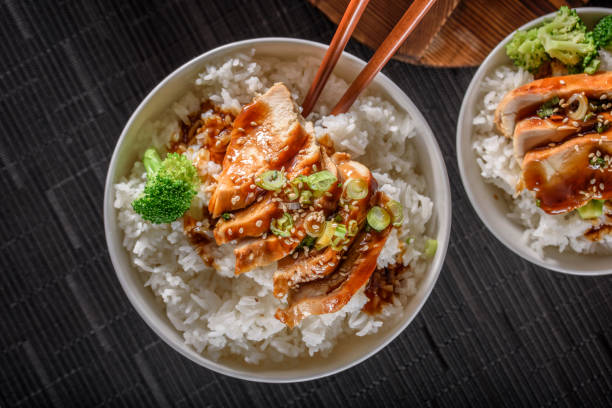

Recipes for 12-24 Months
Family meals modified for your toddler's needs

Mini Turkey Meatballs
Ingredients:
- 1 lb ground turkey
- 1/2 cup breadcrumbs
- 1 egg
- 1/4 cup grated carrot
- 1/4 cup grated zucchini
- 1 tsp herbs (basil, oregano)
Instructions:
- Mix all ingredients well
- Form small, bite-sized meatballs
- Bake at 375°F for 15-20 minutes
- Let cool slightly before serving
Toddler Modifications:
- Make meatballs small enough to be bite-sized
- Cut in half if needed
- Serve with soft pasta or vegetables

Veggie Mac and Cheese
Ingredients:
- 2 cups whole grain pasta
- 1 cup cheese sauce
- 1/2 cup pureed butternut squash
- 1/2 cup peas
- 1/4 cup milk
Instructions:
- Cook pasta until tender
- Mix cheese sauce with squash puree
- Add cooked peas
- Combine with pasta
Toddler Modifications:
- Cut pasta into smaller pieces if needed
- Ensure vegetables are soft
- Let cool to appropriate temperature

Homemade Fish Fingers
Ingredients:
- 2 fillets white fish
- 1 cup breadcrumbs
- 1 egg
- 2 tbsp flour
- Lemon wedges
Instructions:
- Cut fish into strips
- Coat in flour, egg, then breadcrumbs
- Bake at 400°F for 15 minutes
- Serve with vegetables
Toddler Modifications:
- Check carefully for bones
- Cut into appropriate sizes
- Serve with soft vegetables

Quinoa Buddha Bowl
Ingredients:
- 1 cup cooked quinoa
- 1 cup roasted vegetables
- 1/2 cup chickpeas
- 1/4 avocado
- Mild dressing
Instructions:
- Cook quinoa until soft
- Roast vegetables until tender
- Mash chickpeas slightly
- Combine all ingredients
Toddler Modifications:
- Cut vegetables into small pieces
- Mash chickpeas to prevent choking
- Serve components separately if preferred
Mini Vegetable Frittatas
Ingredients:
- 6 eggs
- 1/2 cup milk
- 1 cup mixed vegetables
- 1/2 cup cheese
- Herbs to taste
Instructions:
- Whisk eggs and milk
- Add chopped vegetables
- Pour into muffin tins
- Bake at 350°F for 20 minutes
Toddler Modifications:
- Cut into small pieces
- Ensure vegetables are finely chopped
- Serve at room temperature

Chicken Rice Bowl
Ingredients:
- 1 cup cooked brown rice
- 1 cup shredded chicken
- 1 cup steamed vegetables
- Mild sauce
- Avocado slices
Instructions:
- Cook rice until very tender
- Steam vegetables until soft
- Shred cooked chicken
- Assemble in sections
Toddler Modifications:
- Cut all ingredients into small pieces
- Serve components separately
- Use mild, age-appropriate sauce